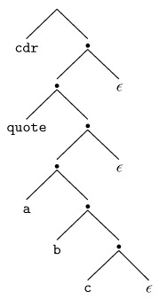

|
|
|
|
4.8 Exercises
|
4.1 |
Basic results from automata theory tell us that the
language L = anbncn
= ∊, abc, aabbcc, aaabbbccc, … is not context free. It can be
captured, however, using an attribute grammar. Give an underlying CFG and a
set of attribute rules that associates a Boolean attribute ok with the root R
of each parse tree, such that R.ok = true if and only if the string
corresponding to the fringe of the tree is in L. |
|
4.2 |
Modify the grammar of Figure 2.24
so that it accepts only programs that contain at least one write statement. Make the same change in the solution to Exercise 2.17.
Based on your experience, what do you think of the idea of using the CFG to
enforce the rule that every function in C must contain at least one return statement? |
|
4.3 |
Give two examples of reasonable semantic rules that cannot
be checked at reasonable cost, either statically or by compiler-generated
code at run time. |
|
4.4 |
Write an S-attributed attribute grammar, based on the CFG
of Example 4.7,
that accumulates the value of the overall expression into the root of the
tree. You will need to use dynamic memory allocation so that individual
attributes can hold an arbitrary amount of information. |
|
As we shall learn in Chapter 10,
Lisp programs take the form of parenthesized lists. The natural syntax tree
for a Lisp program is thus a tree of binary cells (known in Lisp as cons
cells), where the first child represents the first element of the list and
the second child represents the rest of the list. The syntax tree for (cdr '(a b c)) appears in Figure 4.16. (The notation 'L
is syntactic sugar for (quote
L).) Extend the CFG of Exercise 2.18 to create an attribute
grammar that will build such trees. When a parse tree has been fully
decorated, the root should have an attribute v that refers to the syntax
tree. You may assume that each atom has a synthesized attribute v that refers
to a syntax tree node that holds information from the scanner. In your
semantic functions, you may assume the availability of a cons function that
takes two references as arguments and returns a reference to a new cons cell
containing those references. |
|
|
4.6 |
Refer back to the context-free grammar of Exercise 2.13
(page 105). Add attribute rules to the grammar to accumulate into the root of
the tree a count of the maximum depth to which parentheses are nested in the
program string. For example, given the string f1(a, f2(b * (c + (d - (e - f))))), the stmt at the root of the tree should have an
attribute with a count of 3 (the parentheses surrounding argument lists don't
count). |
|
4.7 |
Suppose that we want to translate constant expressions
into the postfix, or "reverse Polish" notation of logician Jan
Lukasiewicz. Postfix notation does not require parentheses. It appears in
stack-based languages such as Postscript, Forth, and the P-code and Java byte
code intermediate forms mentioned in Section 1.4.
It also serves as the input language of certain Hewlett-Packard (HP) brand
calculators. When given a number, an HP calculator pushes it onto an internal
stack. When given an operator, it pops the top two numbers, applies the
operator, and pushes the result. The display shows the value at the top of the
stack. To compute 2 × (5 - 3)/4 one would enter 2 5 3 - * 4 /. |

Figure 4.16: Natural
syntax tree for the Lisp expression (cdr '(a b c)).
|
Using the underlying CFG of Figure 4.1,
write an attribute grammar that will associate with the root of the parse
tree a sequence of calculator button pushes, seq, that will compute the
arithmetic value of the tokens derived from that symbol. You may assume the
existence of a function buttons (c) that returns a sequence of button pushes
(ending with ENTER on an HP calculator) for the constant c. You may also
assume the existence of a concatenation function for sequences of button
pushes. |
|
|
4.8 |
Repeat the previous exercise using the underlying CFG of Figure 4.3. |
|
4.9 |
Consider the following grammar for reverse Polish
arithmetic expressions: § E → E E op | id
§ op →
+ | - | * | /
Assuming that each id has a synthesized attribute name
of type string, and that each E and op has an attribute val of
type string, write an attribute grammar that arranges for the val attribute
of the root of the parse tree to contain a translation of the expression into
conventional infix notation. For example, if the leaves of the tree, left to
right, were "A
A B - * C /," then the val field of the
root would be "((A
* (A - B)) / C)." As an extra challenge,
write a version of your attribute grammar that exploits the usual arithmetic
precedence and associativity rules to use as few parentheses as possible. |
|
4.10 |
To reduce the likelihood of typographic errors, the digits
comprising most credit card numbers are designed to satisfy the so-called Luhn
formula, standardized by ANSI in the 1960s, and named for IBM
mathematician Hans Peter Luhn. Starting at the right, we double every other
digit (the second-to-last, fourth-to-last, etc.). If the doubled value is 10
or more, we add the resulting digits. We then sum together all the digits. In
any valid number the result will be a multiple of 10. For example, 1234 5678
9012 3456 becomes 2264 1658 9022 6416, which sums to 64, so this is not a
valid number. If the last digit had been 2, however, the sum would have been
60, so the number would potentially be valid. Give an attribute grammar for strings of digits that
accumulates into the root of the parse tree a Boolean value indicating
whether the string is valid according to Luhn's formula. Your grammar should
accommodate strings of arbitrary length. |
|
4.11 |
Consider the following CFG for floating-point constants,
without exponential notation. (Note that this exercise is somewhat
artificial: the language in question is regular, and would be handled by the
scanner of a typical compiler.) |
|
§ C → digits . digits § digits → digit more_digits § more_digits → digits | ∊
§ digit → 0 | 1
| 2 | 3 | 4 | 5 | 6 | 7 | 8 | 9 Augment this grammar with attribute rules that will accumulate
the value of the constant into a val attribute of the root of the parse tree.
Your answer should be S-attributed. |
|
|
4.12 |
One potential criticism of the obvious solution to the
previous problem is that the values in internal nodes of the parse tree do
not reflect the value, in context, of the fringe below them. Create an
alternative solution that addresses this criticism. More specifically, create
your grammar in such a way that the val of an internal node is the sum of the
vals of its children. Illustrate your solution by drawing the parse tree and
attribute flow for 12.34. (Hint: you will probably want a different underlying
CFG, and non―L-attributed flow.) |
|
4.13 |
Consider the following attribute grammar for type
declarations, based on the CFG of Exercise 2.11: § decl → ID decl_tail o
⊲
decl.t := decl_tail.t o
⊲
decl_tail.in_tab := insert (decl.in_tab, ID.n, decl_tail.t) o
⊲
decl.out_tab := decl_tail.out_tab § decl_tail → , decl o
⊲
decl_tail.t := decl.t o
⊲
decl.in_tab := decl_tail.in_tab o
⊲
decl_tail.out_tab := decl.out_tab § decl_tail → : ID ; o
⊲
decl_tail.t := ID.n o
⊲
decl_tail.out_tab := decl_tail.in_tab Show a parse tree for the string A, B : C;. Then, using arrows and textual description, specify the
attribute flow required to fully decorate the tree. (Hint: note that the
grammar is not L-attributed.) |
|
4.14 |
A CFG-based attribute evaluator capable of handling
non―L-attributed attribute flow needs to take a parse tree as input. Explain
how to build a parse tree automatically during a top-down or bottom-up parse
(i.e., without explicit action routines). |
|
4.15 |
Building on Example 4.13,
modify the remainder of the recursive descent parser of Figure 2.16
to build syntax trees for programs in the calculator language. |
|
4.16 |
Write an LL(1) grammar with action routines and automatic
attribute space management that generates the reverse Polish translation
described in Exercise 4.7. |
|
4.17 |
a.
Write
a context-free grammar for polynomials in x. Add semantic functions to
produce an attribute grammar that will accumulate the polynomial's derivative
(as a string) in a synthesized attribute of the root of the parse tree. b.
Replace
your semantic functions with action routines that can be evaluated during
parsing. |
|
4.18 |
a.
Write
a context-free grammar for case or switch statements in the style of Pascal or C. Add semantic
functions to ensure that the same label does not appear on two different arms
of the construct. b.
Replace
your semantic functions with action routines that can be evaluated during
parsing. |
|
4.19 |
Write an algorithm to determine whether the rules of an
arbitrary attribute grammar are noncircular. (Your algorithm will require
exponential time in the worst case [JOR75].) |
|
4.20 |
Rewrite the attribute grammar of Figure 4.14
in the form of an ad hoc tree traversal consisting of mutually recursive
subroutines in your favorite programming language. Keep the symbol table in a
global variable, rather than passing it through arguments. |
|
4.21 |
Write an attribute grammar based on the CFG of Figure 4.11
that will build a syntax tree with the structure described in Figure 4.14. |
|
4.22 |
Augment the attribute grammar of Figure 4.5,
Figure 4.6,
or Exercise 4.21 to initialize a synthesized attribute in every syntax tree
node that indicates the location (line and column) at which the corresponding
construct appears in the source program. You may assume that the scanner
initializes the location of every token. |
|
4.23 |
Modify the CFG and attribute grammar of Figures 4.11
and 4.14 to
permit mixed integer and real expressions, without the need for float and trunc. You will want to add an annotation to any node that must
be coerced to the opposite type, so that the code generator will know to
generate code to do so. Be sure to think carefully about your coercion rules.
In the expression my_int
+ my_real, for example, how will you know
whether to coerce the integer to be a real, or to coerce the real to be an
integer? |
|
4.24 |
Explain the need for the A : B notation on the
left-hand sides of productions in a tree grammar. Why isn't similar notation
required for context-free grammars? |
On the CD 4.25�C4.29 In More Depth.